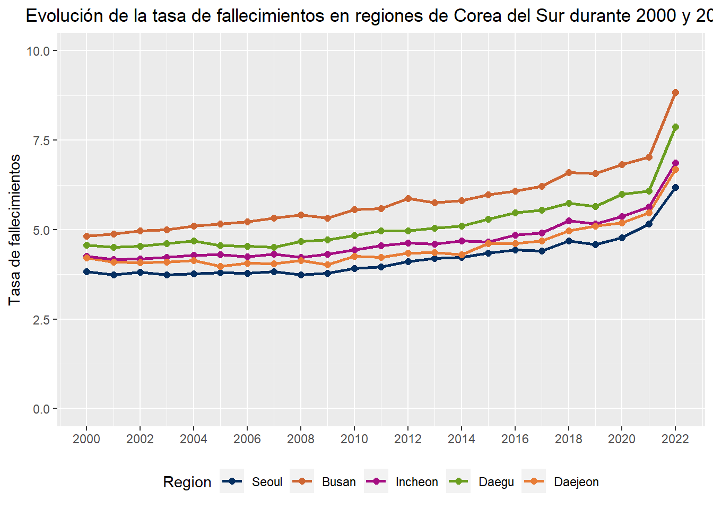
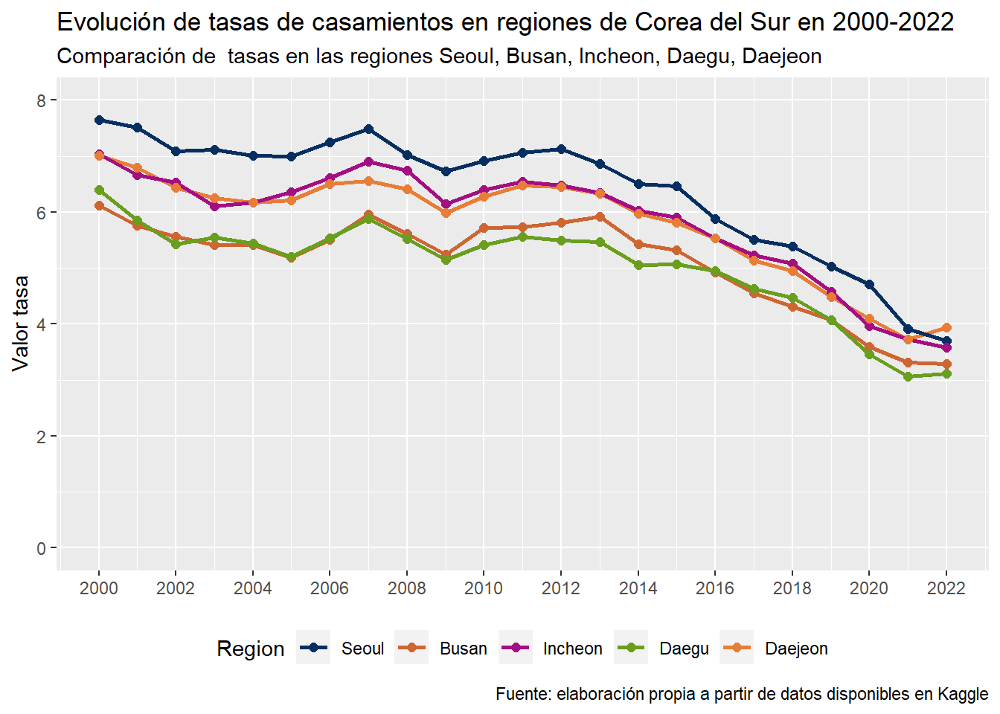
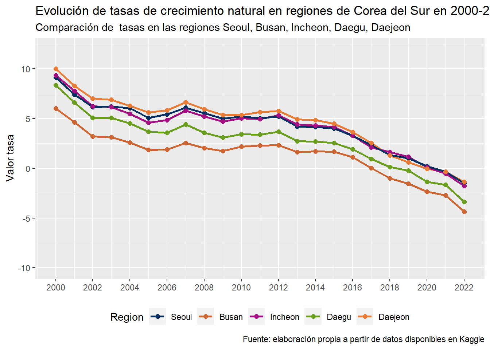

| Descripción de variables a trabajar | ||
| Variables | Tipo | Descripción |
|---|---|---|
| Region | carácter | Ciudad de Corea del Sur |
| Tasa_de_nacimientos | numérico | Número de nacimientos por cada mil habitantes en un año |
| Tasa_de_Fallecimientos | numérico | Número de muertes por cada mil habitantes en un año |
| Tasa_de_divorcios | numérico | Número de divorcios por cada mil habitantes durante un año |
| Tasa_de_casamientos | numérico | Número de casamientos por cada mil habitantes durante un año |
| Tasa_de_crecimiento_natural | numérico | Es el crecimiento o disminución natural expresado en términos relativos al tamaño de la población |
| Año | numérico | Corresponde al año de la fecha en que se registraron los datos |
Desarrollo de la demografía de Corea del Sur durante 2000-2022
Introducción
En la actualidad, algunos países del mundo son mucho más relevantes que otros por tener aspectos como una gran dimensión territorial, poder económico y político y la organización de su sociedad. Una pieza del mundo que dispone con estas características y resalta es el continente asiático, que cuenta con, además de lo anterior, avances tecnológicos, donde los habitantes se ven influenciados beneficiosamente por esto sin perder sus raíces antiguas. Un país a destacar, que pertenece a este territorio, corresponde a Corea del Sur, una de las características es su gran número de habitantes, su cultura conservadora y su gran economía. Si retrocedemos un par de años, esta potencia mundial era totalmente distinta a la que conocemos actualmente, pues no poseía un buen lugar en el ranking del PIB, no era un gran exportador, ni un importador que llamase la atención. Por ende, se puede afirmar que en muy poco tiempo, Corea del Sur es un país que ha logrado tener un gran crecimiento.
Al día de hoy, se puede apreciar la influencia que tiene la economía de este país a nivel mundial. Sin embargo, también existen otros temas de gran interés, tales como el ámbito social y demográfico. Es por esto que es interesante analizar la evolución de Corea del Sur en estos temas, en base a las siguientes preguntas: ¿Qué ha pasado con la población en los últimos 20 años? ¿Han existido otros hechos que han tenido incidencia en la mortalidad y natalidad? ¿Los eventos dentro de un país influyen en la toma de decisiones personales. Como por ejemplo la de casarse? En este proyecto se intentará responder a estas preguntas a través del análisis de los datos obtenidos, los que serán de ayuda para conocer si es que durante este último año, se han presentados diversos patrones e interpretar cómo un hecho histórico afecta a la sociedad de un país.
Con lo dicho anteriormente, los datos que se utilizarán pertenecen a una base de datos correspondiente a la demografía de Corea del Sur, la que almacena variables relativas a cómo han evolucionado a nivel regional, respecto a tópicos como el número de muertes, nacimientos, divorcios y casamientos en los últimos 22 años. Este reporte se enfocará en cinco ciudades con más densidad poblacional del país, con tal de identificar patrones demográficos de este país que han ocurrido, y de esta forma descubrir si existe algún fenómeno que haya afectado o provocaron desequilibrio en los patrones normales. Por ejemplo, se sabe que en 2001 se vió alterada la densidad por inmigración de habitantes de Corea del Norte, por lo que desde ahí hasta el 2022 es probable e interesante saber qué ha ocurrido luego de este hecho y cómo ha cambiado la densidad del país.
El objetivo de este proyecto es conocer cómo se comporta la sociedad dentro de un amplio período de tiempo y cómo ha evolucionado la demografía de esta, enfocándose en una potencia mundial como lo es Corea del Sur. Luego de ver y obtener resultados a través de representaciones del comportamiento de distintas variables, se analizará el contexto histórico en que ocurrieron algunos de estos patrones.
Este trabajo está dividido en cuatro secciones. En la primera se entregará contexto respecto a Corea del Sur y el interés de su evolución demográfica en los últimos años. En segundo lugar, se describirán datos y variables para el análisis del trabajo. Luego, en la tercera, se dará un análisis descriptivo de los patrones de las variables de interés contenidas en la base de datos. Por último, en la cuarta sección, se interpretarán los patrones o resultados de la sección anterior en función de fenómenos históricos que ocurrieron en el período que cubre la base de datos que ocuparemos.
Desarrollo
Base de datos
Debido a que se mencionó anteriormente los recursos y proceso de este proyecto, a continuación se presentará una breve tabla descriptiva de las variables que contiene la base de datos con la que se trabajará en las etapas del proyecto.
Las columnas contiene el nombre de cada variable, su tipo y una breve descripción.
Como podemos ver tenemos distintas variables donde en su mayoría son de tipo numérico.Pues nos enfocaremos en las tasas de naciemiento, fallecimientos, divorcios y matrimonio, y el año de cada registro.
Gráficos y tabla
A continuacion se expondrán a través de gráficos y una tabla la evolución de las tasas durante los años 2000 hasta 2022. Cada uno de los esquemas representará el progreso promedio de las tasas por cada año en las ciudades o regiones con mayor población del país a trabajar, las cuales son: Busan, Seúl, Incheon, Daegu y Daejeon.
Ahora, podemos ver la figura 1 la cual presenta el desarrollo de la tasa de nacimiento:
Gráfico 1

Al observar le grafico podemos darnos cuenta de que no existe en general un equilibrio en la tasa de nacimiento de cada ciudad, pero si se puede decir globalmente que en las cinco regiones se presentan las mismas tendencias: aumentan en los mismos años y lo mismo sucede cuando disminuye. Si nos fijamos entre 2001 y 2002 existe una disminución, la cual es predecible de esperar por la guerra contra el terrorismo en que se encontraba el mundo en dicho peridodo. Al igual que la disminución entre 2016 a 2020, que se puede atribuir a cronológicamente a los hechos: en 2016 ocurrió una crisis política a causa de la mandataria surcoreana, luego comenzó la tensión política entre EE. UU. y Corea del Norte debido a la contraposción entre sus presidentes por una supuesta guerra nuclear que se especulaba y finalemente la pandemia que comenzó en 2019. Lo cual se puede presagiar que las personas en consecuencia de circunstancias mundiales en estos periodos y tambien la incertidumbre sobre el futuro, provocarán que menos mujeres se sientan seguras para ser madres.
De esta forma, también se puede estudiar la tasa de fallecimiento en la misma población y qué puede traer consigo, tal como se analizó anteriormente. A continuación, se presenta el gráfico:
Gráfico 2

Al observar el comportamiento de la tasa en las cinco regiones se puede decir que desde el año 2004 en adelante este índice aumenta considerablemente y destaca en los últimos años donde está presente un peak de crecimiento.
Es importante destacar que la región con mayor tasa de fallecimientos corresponde a Busan, siendo la segunda ciudad con mayor población.
Frente a la representación e información de hechos internos del país, durante 2004 la cifra de suicidios creció considerablemente en los jóvenes, y empieza a ser más común que la causa de muerte entre los habitantes del país sea el cáncer. Y durante el trascurso de los años la población se concentra en adultos entre 30 y 45 años. Además, la pandemia global que se vive durante el 2019 y hasta hoy aumentó la tasa.
Con esto es posible relacionar la causa y efecto frente a los antecedentes internos del territorio ocurridos en los últimos 22 años, que se ve con una alteración en la demografía. Primero se enlaza que comenzará a crecer durante el año 2004 por el aumento de muertes de jóvenes, luego que a más adultos fueran afectados por el cáncer y finalmente el peak fuera provocado por el COVID-19 donde no había control de la enfermedad.
Por consiguiente, podemos hacer el estudio del crecimiento natural, respresentado por el siguiente gráfico:
Gráfico 3

Al percibir la conducta de la tasa en la representación, esta sí, desde su comienzo hasta su fin tiene un notable cambio, ya que la cifra de la tasa termina siendo negativa, donde era positiva. Es por esto que durante la marcha del tiempo se presenciaron más muertes que nacimientos en Corea del Sur.
Frente a esto, al recolectar información de hechos, tanto externos como internos, que podrían haber interferido en esto, se puede comentar que algunas de las causas de esto son: en primer lugar que existió un cambio desde 2016 (donde aproximadamente comienza su descenso), el cual se puede relacionar con el cambio de conciencia en la sociedad con respecto a no tener hijos; y en segundo lugar, que se relaciona con la causa anterior, es la incertidumbre que comienza a aumentar por las relaciones tensas entre países, como USA con Corea del Norte y problemas globales económicos.
A diferencia de lo anterior, se estudia también la tasa de divorcios en estas regiones, como se ve en el gráfico que sigue.
Gráfico 4

En este gráfico la tasa que lidera es la de la ciudad de Incheon en los 22 años.
Si hacemos una descripción sobre el comportamiento global de la tasa, esta aumento desde el año 2000, tuvo su mayor valor en 2003 para luego disminuir hasta 2022 donde no se vio otro aumento, incluso en este último año es donde alcanza el valor mínimo.
Durante el año 2003 se presenció el valor máximo de esta tasa, pues, esto se puede atribuir a que en este año se realizaron las negociaciones entre potencias, incluyendo a Corea del Sur, con tal de mejorar la relación entre las Coreas, lo cual no tuvo un buen desenlace provocando incertidumbre del futuro. Por lo que se puede concluir que frente a esto, muchas familias decidieron tomar rumbos distintos para un futuro con menos dependencia familiar.
Siguiendo la misma línea de estudio, el siguiente gráfico representa lo contrario a lo de antes, es decir, la tasa de casamientos.
Gráfico 5

Para esta representación se puede ver que evoluciona de manera decreciente en la cifra de la tasa, no existe la presencia de fuertes amentos o disminución.
Este progreso se puede enlazar que en los 22 años la sociedad surcoreana ha cambiado, ya que menos personas se casan en los últimos años (a contar de 2012), cabe destacar que era muy común que las familias arreglaran matrimonios y obligaran a casarse a parejas tanto por la religión católica como de otra creencia, por lo que existe más conciencia de rechazo al matrimonio e ir en contra de esto.
En este caso, no existe un hecho histórico que haya provocado esta conducta para este caso, sino que una evolución de la sociedad.
Como vimos anterioremente, se puede ver un analisis durante los ultimos 22 años sobre qué ha pasado en al demografia de Corea y su variación, pero ¿como se vio afectado este país socialmente duante la pandemia?¿Habrá afectado como lo hizo en otros países con los numero de nacimientos y muertes? Para responder esta pregunta, mostraremos una tabla que incluye el promedio de cada una de las tasas en el correspondiente año por cada región de Corea.
| Tasas durante la pandemia en regiones de Corea del Sur | |||||
| Tasas | |||||
|---|---|---|---|---|---|
| Tasa_de_nacimientos | Tasa_de_Fallecimientos | Tasa_de_divorcios | Tasa_de_casamientos | Tasa_de_crecimiento_natural | |
| Seoul | |||||
| 2019 | 5.608333 | 4.583333 | 1.783333 | 5.033333 | 1.0250000 |
| 2020 | 4.975000 | 4.783333 | 1.708333 | 4.708333 | 0.2000000 |
| 2021 | 4.800000 | 5.166667 | 1.583333 | 3.908333 | -0.3416667 |
| 2022 | 4.700000 | 6.183333 | 1.416667 | 3.700000 | -1.5166667 |
| Busan | |||||
| 2019 | 5.041667 | 6.575000 | 2.008333 | 4.075000 | -1.5416667 |
| 2020 | 4.491667 | 6.816667 | 1.925000 | 3.591667 | -2.3500000 |
| 2021 | 4.308333 | 7.025000 | 1.891667 | 3.316667 | -2.7083333 |
| 2022 | 4.500000 | 8.833333 | 1.650000 | 3.283333 | -4.3500000 |
| Incheon | |||||
| 2019 | 6.333333 | 5.166667 | 2.441667 | 4.575000 | 1.1583333 |
| 2020 | 5.491667 | 5.366667 | 2.366667 | 3.966667 | 0.1166667 |
| 2021 | 5.125000 | 5.641667 | 2.316667 | 3.725000 | -0.5166667 |
| 2022 | 5.116667 | 6.866667 | 1.983333 | 3.583333 | -1.7500000 |
| Daegu | |||||
| 2019 | 5.433333 | 5.650000 | 1.916667 | 4.066667 | -0.2166667 |
| 2020 | 4.633333 | 5.991667 | 1.808333 | 3.458333 | -1.3583333 |
| 2021 | 4.475000 | 6.083333 | 1.725000 | 3.058333 | -1.6333333 |
| 2022 | 4.483333 | 7.866667 | 1.550000 | 3.116667 | -3.3833333 |
| Daejeon | |||||
| 2019 | 5.725000 | 5.100000 | 2.108333 | 4.483333 | 0.6250000 |
| 2020 | 5.116667 | 5.191667 | 2.058333 | 4.100000 | -0.0500000 |
| 2021 | 5.108333 | 5.466667 | 1.908333 | 3.733333 | -0.3500000 |
| 2022 | 5.333333 | 6.683333 | 1.683333 | 3.933333 | -1.3500000 |
| Fuente: elaboración propia a partir de datos disponibles en Kaggle | |||||
Con la tabla podemos notar que en algunas regiones existe mayor variación que en otras, donde netamente es por el tamaño de la población en cada una.
Se puede analizar que a todas les afecto de manera negativa, sobre todo en la tasa de crecimiento natural, la cual se puede decir que el número de fallecimientos fue superior frente a la natalidad para las cinco regiones donde en cada cifra final terminó negativa. En el caso de la tasa de nacimiento, esta no varió significativamente su valor en este periodo en las ciudades, por lo que se puede concluir que ya las personas no decidían tener hijos. En el caso de la tasa de fallecimientos en la ciudad de Daegu, varió considerablemente frente a las otras, pero aun así cambió su valor, aumentando el caso de difuntos en este período por el descontrol de la enfermedad.
Con respecto a la tasa de casamientos y divorcios, se puede generalmente concluir que durante este período, estas no fueron afectadas de manera considerable como la tasa de fallecimiento y crecimiento natural, por lo que se puede ultimar que estas tasas no fueron relevantes frente a la pandemia.
Conclusión
Como se expuso durante el desarrollo del reporte, los acontecimientos, tanto internos de un país como externos o mundiales, afectan o repercuten en la demográfica de un territorio, siempre cuando este hecho sea relévate, como por ejemplo una crisis económica o política.
Frente a los datos y resultados, se nos es factible concluir que en el momento que ocurre un hecho como a nivel región como de magnitud global afectará no solo a la organización del país, sino que también se comportará la sociedad y la toma de decisiones se vera alterada. En consecuencia, tomando como referencia a esta potencia nos lleva a que se puede tomar lo anterior para evaluar el comportamiento de su sociedad.
Al considerar la evolución de cada una de las tasas, es probable que en algunos años más sean muy distintas a lo que se vio durante los últimos 22 años, por lo que sería interesante y de importancia ver como otros hecho afectan a esta potencia mundial que por hoy sigue liderando con su desempeñó económico. Con esto también se podrían agregar nuevas tasas que son influyentes en la nación, como: promedio de edad de la población, desempleo, sueldo mínimo, entre otras, para conocer su conducta frente a algún hecho relevante.